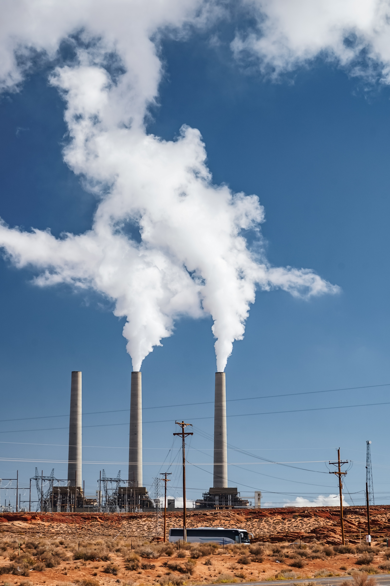
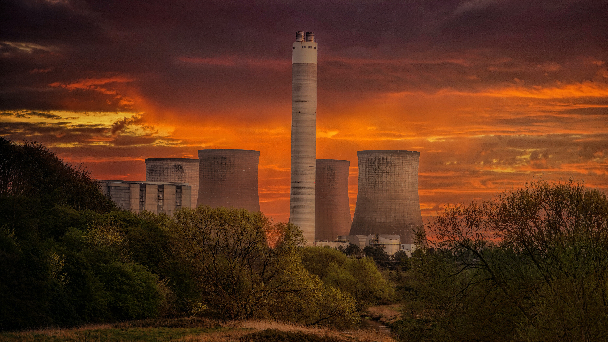
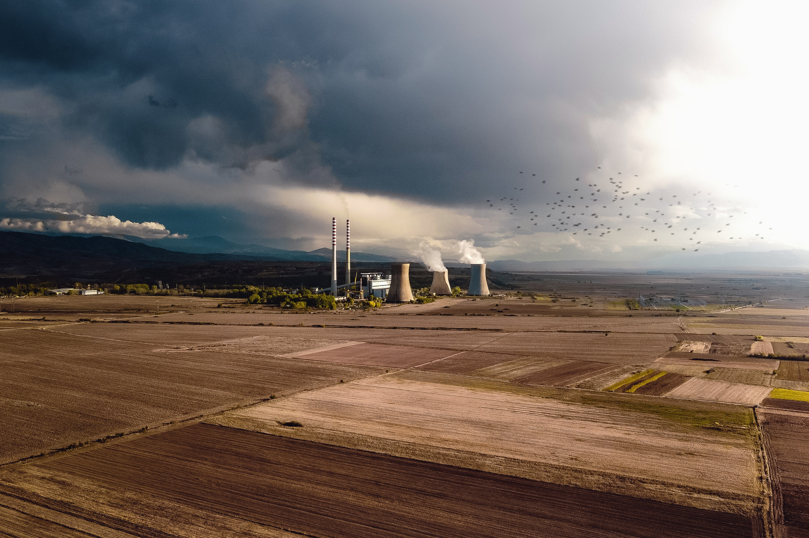

Change in average surface air temperature since the industrial revolution, plus drivers for that change. Human activity has caused increased temperatures, with natural forces adding some variability.[1] Contemporary climate change includes both global warming and its impacts on Earth's weather patterns. There have been previous periods of climate change, but the current rise in global average temperature is more rapid and is primarily caused by humans.[2][3] Burning fossil fuels adds greenhouse gases to the atmosphere, most importantly carbon dioxide (CO2) and methane. Smaller contributions come from agriculture, industrial processes, and forest loss.[4] Greenhouse gases warm the air by absorbing heat radiated by the Earth, trapping the heat near the surface. Greenhouse gas emissions amplify this effect, causing the Earth to take in more energy from sunlight than it can radiate back into space. Due to climate change, deserts are expanding, while heat waves and wildfires are becoming more common.[5] Increased warming in the Arctic has contributed to melting permafrost, glacial retreat and sea ice loss.[6] Higher temperatures are also causing more intense storms, droughts, and other weather extremes.[7] Rapid environmental change in mountains, coral reefs, and the Arctic is forcing many species to relocate or become extinct.[8] Climate change threatens people with food and water scarcity, increased flooding, extreme heat, more disease, and economic loss. Human migration and conflict can also be a result.[9] The World Health Organization (WHO) calls climate change the greatest threat to global health in the 21st century.[10] Even if efforts to minimise future warming are successful, some effects will continue for centuries. These include sea level rise, and warmer, more acidic oceans.[11] Many of these impacts are already felt at the current 1.2 °C (2.2 °F) level of warming. Additional warming will increase these impacts and may trigger tipping points, such as the melting of the Greenland ice sheet.[12] Under the 2015 Paris Agreement, nations collectively agreed to keep warming "well under 2 °C". However, with pledges made under the Agreement, global warming would still reach about 2.7 °C (4.9 °F) by the end of the century.[13] Limiting warming to 1.5 °C will require halving emissions by 2030 and achieving net-zero emissions by 2050.[14] Some effects of climate change, clockwise from top left: Wildfire intensified by heat and drought, worsening droughts compromising water supplies, and bleaching of coral caused by ocean acidification and heating. Making deep cuts in emissions will require switching away from burning fossil fuels and towards using electricity generated from low-carbon sources. This includes phasing out coal-fired power plants, vastly increasing use of wind, solar, and other types of renewable energy, and taking measures to reduce energy use. Electricity generated from non-carbon-emitting sources will need to replace fossil fuels for powering transportation, heating buildings, and operating industrial facilities.[16][17] Carbon can also be removed from the atmosphere, for instance by increasing forest cover and by farming with methods that capture carbon in soil.[18] While communities may adapt to climate change through efforts like better coastline protection, they cannot avert the risk of severe, widespread, and permanent impacts.[19]
Multiple independent instrumental datasets show that the climate system is warming.[31] The 2011–2020 decade warmed to an average 1.09 °C [0.95–1.20 °C] compared to the pre-industrial baseline (1850–1900).[32] Surface temperatures are rising by about 0.2 °C per decade,[33] with 2020 reaching a temperature of 1.2 °C above the pre-industrial era.[34] Since 1950, the number of cold days and nights has decreased, and the number of warm days and nights has increased.[35] There was little net warming between the 18th century and the mid-19th century. Climate information for that period comes from climate proxies, such as trees and ice cores.[36] Thermometer records began to provide global coverage around 1850.[37] Historical patterns of warming and cooling, like the Medieval Climate Anomaly and the Little Ice Age, did not occur at the same time across different regions. Temperatures may have reached as high as those of the late-20th century in a limited set of regions.[38] There have been prehistorical episodes of global warming, such as the Paleocene–Eocene Thermal Maximum.[39] However, the modern observed rise in temperature and CO2 concentrations has been so rapid that even abrupt geophysical events in Earth's history do not approach current rates.[40] Evidence of warming from air temperature measurements are reinforced with a wide range of other observations.[41][42] There has been an increase in the frequency and intensity of heavy precipitation, melting of snow and land ice, and increased atmospheric humidity.[43] Flora and fauna are also behaving in a manner consistent with warming; for instance, plants are flowering earlier in spring.[44] Another key indicator is the cooling of the upper atmosphere, which demonstrates that greenhouse gases are trapping heat near the Earth's surface and preventing it from radiating into space.[45]
Regions of the world warm at differing rates. The pattern is independent of where greenhouse gases are emitted, because the gases persist long enough to diffuse across the planet. Since the pre-industrial period, the average surface temperature over land regions has increased almost twice as fast as the global-average surface temperature.[46] This is because of the larger heat capacity of oceans, and because oceans lose more heat by evaporation.[47] The thermal energy in the global climate system has grown with only brief pauses since at least 1970, and over 90% of this extra energy has been stored in the ocean.[48][49] The rest has heated the atmosphere, melted ice, and warmed the continents.[50] The Northern Hemisphere and the North Pole have warmed much faster than the South Pole and Southern Hemisphere. The Northern Hemisphere not only has much more land, but also more seasonal snow cover and sea ice. As these surfaces flip from reflecting a lot of light to being dark after the ice has melted, they start absorbing more heat.[51] Local black carbon deposits on snow and ice also contribute to Arctic warming.[52] Arctic temperatures are increasing at over twice the rate of the rest of the world.[53] Melting of glaciers and ice sheets in the Arctic disrupts ocean circulation, including a weakened Gulf Stream, further changing the climate

Greenhouse gases are transparent to sunlight, and thus allow it to pass through the atmosphere to heat the Earth's surface. The Earth radiates it as heat, and greenhouse gases absorb a portion of it. This absorption slows the rate at which heat escapes into space, trapping heat near the Earth's surface and warming it over time.[61] Before the Industrial Revolution, naturally-occurring amounts of greenhouse gases caused the air near the surface to be about 33 °C warmer than it would have been in their absence.[62][63] While water vapour (~50%) and clouds (~25%) are the biggest contributors to the greenhouse effect, they increase as a function of temperature and are therefore feedbacks. On the other hand, concentrations of gases such as CO2 (~20%), tropospheric ozone,[64] CFCs and nitrous oxide are not temperature-dependent, and are therefore external forcings.[65] Human activity since the Industrial Revolution, mainly extracting and burning fossil fuels (coal, oil, and natural gas),[66] has increased the amount of greenhouse gases in the atmosphere, resulting in a radiative imbalance. In 2019, the concentrations of CO2 and methane had increased by about 48% and 160%, respectively, since 1750.[67] These CO2 levels are higher than they have been at any time during the last 2 million years. Concentrations of methane are far higher than they were over the last 800,000 years.[68] The Global Carbon Project shows how additions to CO2 since 1880 have been caused by different sources ramping up one after another. Global anthropogenic greenhouse gas emissions in 2019 were equivalent to 59 billion tonnes of CO2. Of these emissions, 75% was CO2, 18% was methane, 4% was nitrous oxide, and 2% was fluorinated gases.[69] CO2 emissions primarily come from burning fossil fuels to provide energy for transport, manufacturing, heating, and electricity.[4] Additional CO2 emissions come from deforestation and industrial processes, which include the CO2 released by the chemical reactions for making cement, steel, aluminum, and fertiliser.[70] Methane emissions come from livestock, manure, rice cultivation, landfills, wastewater, and coal mining, as well as oil and gas extraction.[71] Nitrous oxide emissions largely come from the microbial decomposition of fertiliser.[72] Despite the contribution of deforestation to greenhouse gas emissions, the Earth's land surface, particularly its forests, remain a significant carbon sink for CO2. Land-surface sink processes, such as carbon fixation in the soil and photosynthesis, remove about 29% of annual global CO2 emissions.[73] The ocean also serves as a significant carbon sink via a two-step process. First, CO2 dissolves in the surface water. Afterwards, the ocean's overturning circulation distributes it deep into the ocean's interior, where it accumulates over time as part of the carbon cycle. Over the last two decades, the world's oceans have absorbed 20 to 30% of emitted CO2.[74] Aerosols and clouds Air pollution, in the form of aerosols, not only puts a large burden on human health, but also affects the climate on a large scale.[75] From 1961 to 1990, a gradual reduction in the amount of sunlight reaching the Earth's surface was observed, a phenomenon popularly known as global dimming,[76] typically attributed to aerosols from biofuel and fossil fuel burning.[77] Globally, aerosols have been declining since 1990, meaning that they no longer mask greenhouse gas warming as much.[78] Aerosols scatter and absorb solar radiation. They also have indirect effects on the Earth's radiation budget. Sulfate aerosols act as cloud condensation nuclei and lead to clouds that have more and smaller cloud droplets. These clouds reflect solar radiation more efficiently than clouds with fewer and larger droplets.[79] They also reduce the growth of raindrops, which makes clouds more reflective to incoming sunlight.[80] Indirect effects of aerosols are the largest uncertainty in radiative forcing.[81] While aerosols typically limit global warming by reflecting sunlight, black carbon in soot that falls on snow or ice can contribute to global warming. Not only does this increase the absorption of sunlight, it also increases melting and sea-level rise.[82] Limiting new black carbon deposits in the Arctic could reduce global warming by 0.2 °C by 2050.[83]

The rate of global tree cover loss has approximately doubled since 2001, to an annual loss approaching an area the size of Italy.[84] Humans change the Earth's surface mainly to create more agricultural land. Today, agriculture takes up 34% of Earth's land area, while 26% is forests, and 30% is uninhabitable (glaciers, deserts, etc.).[85] The amount of forested land continues to decrease, which is the main land use change that causes global warming.[86] Deforestation releases CO2 contained in trees when they are destroyed, plus it prevents those trees from absorbing more CO2 in the future.[87] The main causes of deforestation are: permanent land-use change from forest to agricultural land producing products such as beef and palm oil (27%), logging to produce forestry/forest products (26%), short term shifting cultivation (24%), and wildfires (23%).[88] Land use changes not only affect greenhouse gas emissions. The type of vegetation in a region affects the local temperature. It impacts how much of the sunlight gets reflected back into space (albedo), and how much heat is lost by evaporation. For instance, the change from a dark forest to grassland makes the surface lighter, causing it to reflect more sunlight. Deforestation can also affect temperatures by modifying the release of chemical compounds that influence clouds, and by changing wind patterns.[89] In tropic and temperate areas the net effect is to produce significant warming, while at latitudes closer to the poles a gain of albedo (as forest is replaced by snow cover) leads to a cooling effect.[89] Globally, these effects are estimated to have led to a slight cooling, dominated by an increase in surface albedo.[90]
Physical climate models are unable to reproduce the rapid warming observed in recent decades when taking into account only variations in solar output and volcanic activity.[91] As the Sun is the Earth's primary energy source, changes in incoming sunlight directly affect the climate system.[81] Solar irradiance has been measured directly by satellites,[92] and indirect measurements are available from the early 1600s onwards.[81] There has been no upward trend in the amount of the Sun's energy reaching the Earth.[93] Further evidence for greenhouse gases causing global warming comes from measurements that show a warming of the lower atmosphere (the troposphere), coupled with a cooling of the upper atmosphere (the stratosphere).[94] If solar variations were responsible for the observed warming, the troposphere and stratosphere would both warm.[59] Explosive volcanic eruptions represent the largest natural forcing over the industrial era. When the eruption is sufficiently strong (with sulfur dioxide reaching the stratosphere), sunlight can be partially blocked for a couple of years. The temperature signal lasts about twice as long. In the industrial era, volcanic activity has had negligible impacts on global temperature trends.[95] Present-day volcanic CO2 emissions are equivalent to less than 1% of current anthropogenic CO2 emissions.[96]

Renewable energy is key to limiting climate change.[224] Fossil fuels accounted for 80% of the world's energy in 2018. The remaining share was split between nuclear power and renewables (including hydropower, bioenergy, wind and solar power and geothermal energy).[225] That mix is projected to change significantly over the next 30 years.[217] Solar panels and onshore wind are now among the cheapest forms of adding new power generation capacity in many locations.[226] Renewables represented 75% of all new electricity generation installed in 2019, nearly all solar and wind.[227] Other forms of clean energy, such as nuclear and hydropower, currently have a larger share of the energy supply. However, their future growth forecasts appear limited in comparison.[228] To achieve carbon neutrality by 2050, renewable energy would become the dominant form of electricity generation, rising to 85% or more by 2050 in some scenarios. Investment in coal would be eliminated and coal use nearly phased out by 2050.[229][230] Electricity would also need to become the main energy source for heating and transport.[231] In transport, emissions can be reduced fast by a switch to electric vehicles.[232] Public transport and active transport (cycling and walking) also produce less CO2.[233] For shipping and flying, low-carbon fuels can be used to reduce emissions.[232] Heating would be increasingly decarbonised with technologies like heat pumps.[234] There are obstacles to the continued rapid growth of clean energy, including renewables. For wind and solar, there are environmental and land use concerns for new projects.[235] Wind and solar also produce energy intermittently and with seasonal variability. Traditionally, hydro dams with reservoirs and conventional power plants have been used when variable energy production is low. Going forward, battery storage can be expanded, energy demand and supply can be matched, and long-distance transmission can smooth variability of renewable outputs.[224] Bioenergy is often not carbon-neutral and may have negative consequences for food security.[236] The growth of nuclear power is constrained by controversy around nuclear waste, nuclear weapon proliferation, and accidents.[237][238] Hydropower growth is limited by the fact that the best sites have been developed, and new projects are confronting increased social and environmental concerns.[239] Low-carbon energy improves human health by minimising climate change. It also has the near-term benefit of reducing air pollution deaths,[240] which were estimated at 7 million annually in 2016.[241] Meeting the Paris Agreement goals that limit warming to a 2 °C increase could save about a million of those lives per year by 2050, whereas limiting global warming to 1.5 °C could save millions and simultaneously increase energy security and reduce poverty

Reducing energy demand is another major aspect of reducing emissions.[243] If less energy is needed, there is more flexibility for clean energy development. It also makes it easier to manage the electricity grid, and minimises carbon-intensive infrastructure development.[244] Major increases in energy efficiency investment will be required to achieve climate goals, comparable to the level of investment in renewable energy.[245] Several COVID-19 related changes in energy use patterns, energy efficiency investments, and funding have made forecasts for this decade more difficult and uncertain.[246] Strategies to reduce energy demand vary by sector. In transport, passengers and freight can switch to more efficient travel modes, such as buses and trains, or use electric vehicles.[247] Industrial strategies to reduce energy demand include improving heating systems and motors, designing less energy-intensive products, and increasing product lifetimes.[248] In the building sector the focus is on better design of new buildings, and higher levels of energy efficiency in retrofitting.[249] The use of technologies like heat pumps can also increase building energy efficiency.[250]